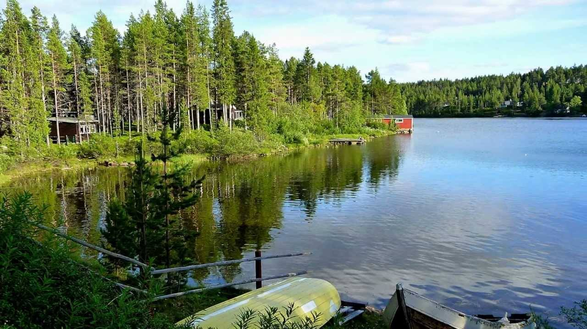
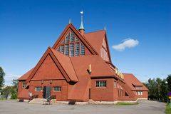

Dalla magia dell’aurora boreale alla magia del sole di mezzanotte – la Lapponia svedese si è svegliata dal lungo sonno invernale.
Al di sopra del circolo polare artico ora il sole non tramonta mai e viene voglia di stare sempre svegli per sfruttare al meglio questi mesi senza neve.
E’ un viaggio molto lento quello sull’ Inlandsbanan, un viaggio per regalarmi qualche momento di dolce far sul trenino bianco e rosso composto da due soli vagoni che procede lentamente attraversando la rigogliosa foresta lappone, per fermarsi in località remote.
Dal finestrino vedo scorrere boschi che si estendono tutt’intorno ai villaggi interamente in legno e le sponde di qualche bel lago…ma al di là di questo nulla…o meglio, solo la natura, che si manifesta in tutte le sue forme ed in tutti i suoi colori, regalandomi panorami unici nel loro genere, stupisce la mutevolezza del paesaggio, che riflette- letteralmente – le tonalità del cielo, creando degli straordinari effetti ottici, durante tutto l’arco della giornata, ma soprattutto verso sera.
Al tramonto arrivo a Kiruna, la città che si chiama come un uccello, il nome deriva da “giron”- pernice bianca – , la città più settentrionale della Svezia. All’una di notte, nel vecchio albergo in legno, il letto trema, è il cuore di Kiruna che batte una sola volta ogni notte. Con la scossa arriva un boato sordo, sale dalle viscere della terra, da 1300 metri di profondità. Sono le 17 tonnellate di esplosivo fatte brillare nei tunnel della miniera in ferro più grande al mondo. Se gli albergatori e le guide turistiche si dimenticano di avvertire i nuovi arrivati, gli insonnoliti ospiti con i cappotti sui pigiami, piumini su camicie da notte si riversano in strada pensando a un terremoto.
Ma non è il terremoto, è il segnale che Kiruna è ancora viva. Perché la città è nata e cresciuta tra le due montagne lapponi Luissavaara – Kiirunavaara , da cui si estrae il ferro; oggi Kiruna ha ventitremila abitanti, due comunità Sami, natura incontaminata , alci ,boschi, e decine e decine di migliaia di renne.
Un paradiso in terra. Un paradiso che lentamente ma inesorabilmente sprofonda, affondato da migliaia di tunnel sotterranei che con gli anni hanno consumato la terra.

ARTE A KIRUMA
(di Lucia)
 La chiesa di Kiruna Nel 2001, la Chiesa di Kiruna, una delle più grandi strutture di legno della Svezia, fu votata come il più bell'edificio del paese.
Fu progettata da Gustav Wickman, collocata su una collina e costruita tra il 1909 e il 1912 . Fu consacrata dall'Arcivescovo Olof Bergqvjst l'8/12/1912. Il famoso dipinto dell'altare fu realizzato, in stile Art Nouveau, dal Principe Eugenio, duca di Närke (1865-1947), pittore, collezionista e mecenate.
Il quadro rappresenta una landa lappone, un bosco di betulle e dei raggi di luce che illuminano il cielo. Figlio del Re di Svezia e Norvegia Oscar II e quarto in linea di successione al trono, fu più interessato all'arte e alla pittura che a regnare, tanto da divenire uno dei più promettenti pittori paesaggisti dell'epoca in Svezia.
Le sue opere trovarono ispirazione nelle campagne di Stoccolma e nei territori di Västergötland e di Skäne, nel sud della Svezia.
Curioso è il collegamento tra l'Italia e il dipinto dell'altare della Chiesa di Kiruna: sembra che il Direttore della miniera di Kiruna, al quale si deve la costruzione della Chiesa, apprezzasse molto un quadro che il Principe Eugenio aveva dipinto in Toscana, tanto da commissionargli per la Chiesa un dipinto simile che riportasse tutte le caratteristiche della natura della Lapponia.